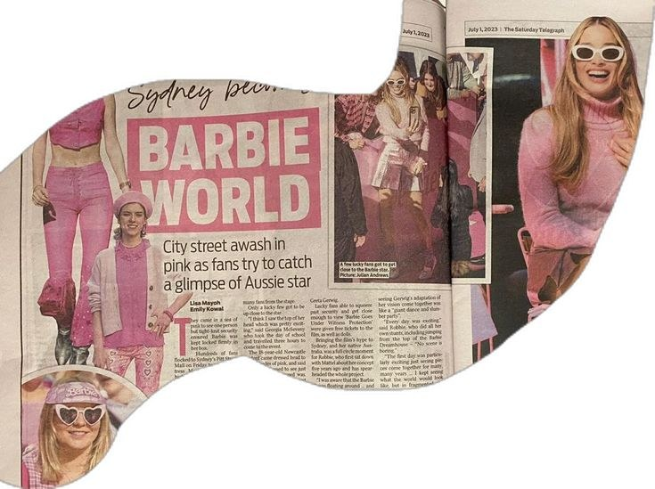

Vie et société
Les vies se croisent dans les pages.

 Biographies
Biographies Témoignages
Témoignages Vie pratique
Vie pratique
Sociologie- Finances personnelles

 Développement personnel
Développement personnel
Les vies se croisent dans les pages.
BiographiesTémoignagesVie pratique
SociologieFinances personnellesDéveloppement personnel